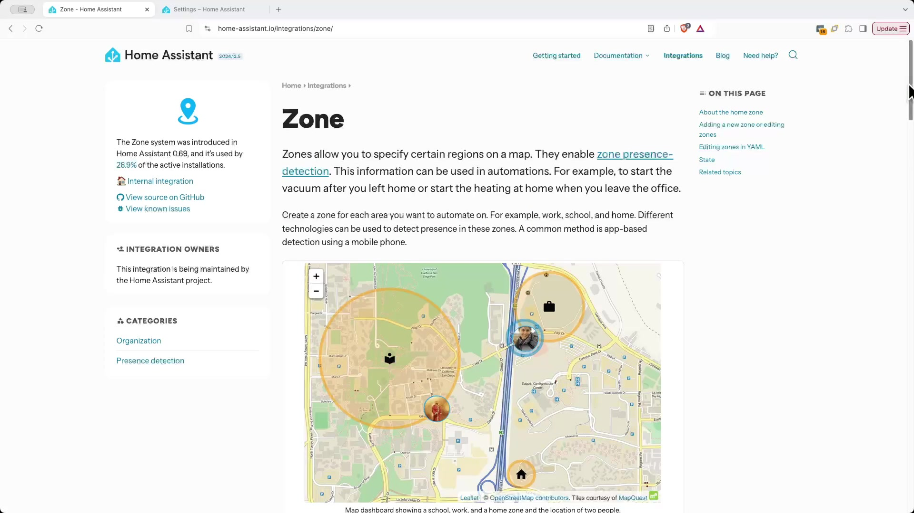
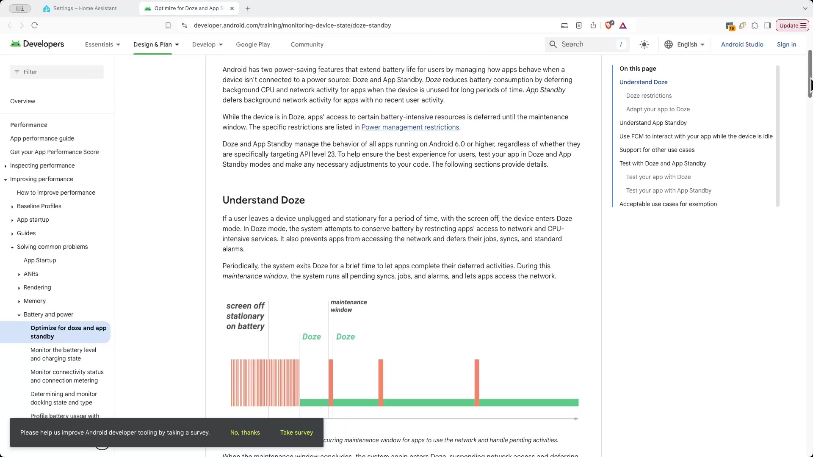
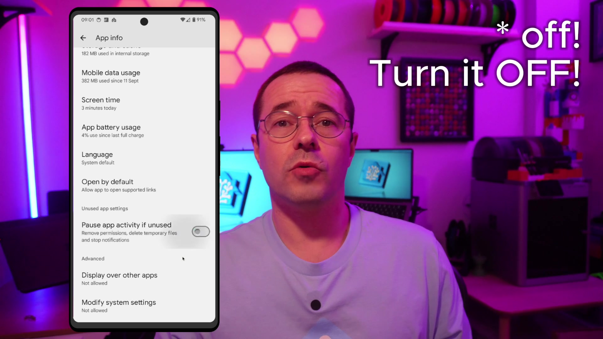

Home Assistant zones
Note: This is generated from a transcript from one of my YouTube videos
Unlock Your Smart Home’s Potential: Mastering Home Assistant Zones
If you’re new to the channel, my name’s Ben. I’m a software engineer who’s probably spent a little too much time automating my house with Home Assistant. If you like exploring new home automation ideas, then you’re definitely in the right place.
What Are Home Assistant Zones?
 Zones are essentially geofences that you can set up directly within Home Assistant. They're included by default, so there's no need to install anything extra to start using them. A zone is considered active for a user when their device, running the Home Assistant companion app, is within that geofence. There's some potential for them to be a little bit flaky, because some devices try to optimize their battery usage by limiting location updates. But don't worry, we'll get into that in more detail later in this post.Setting Up Your First Zone
The companion app needs to be running on your phone, and it’s crucial to ensure it has access to location services. To do this, open the companion app’s settings, go to Manage Sensors, scroll down to Location Sensors, and turn on both Location Zone and Background Location. Now that you’re set up with zones and the companion app, you can start using them in your automations!
Practical Automation Examples with Zones
After quite a bit of trial and error, I realized that you have to explicitly set enabled: true in the trigger step for the automation for the geofence to actually work when you’re adding some dwelling time.
I have a few other automations that don’t use a dwell time, but they still leverage zones effectively. One of these automations will turn off potty reminders when I’m at the school drop-off. The idea is, if I’ve dropped the kid off at nursery, then I don’t want to be reminded about using the potty. You know the drill: “Don’t forget to let the tiny human take a potty break before it’s a puddle party!”
Another automation will turn the heating off when we head to the in-laws. They live quite far away, and normally we visit for a couple of days, so it makes sense to turn off the hot water while we’re there. The automation, of course, will do the reverse as well, so that the hot water gets turned on as we head home. This is superior by far to the basic home and away automations that you get with typical smart thermostats, because you can add in some smart geographic considerations around how long it will take the hot water to heat and how long for the house to warm up. You don’t really want your heating to be turning back on as you get home; you want it to turn on so it’s warm by the time that you arrive back.
Optimizing Zone Performance on Android Devices
 There are a few things you can change to make sure that your geofences are tripped in a timely manner.
- First, go into the app info for the Home Assistant companion app and make sure you’ve turned off Pause app activity if unused.
- Next, under App battery usage, make sure that you’ve turned on Allow background usage.
- Finally, go into Battery and Battery Saver settings, open up Adaptive Battery, and make sure Use adaptive battery is turned off.
This will, of course, affect your battery life because your phone won’t be entering Doze Mode as aggressively, but it will mean that you get notifications quicker in some cases and it will also trigger zones much more quickly. Depending on your setup, this might be a problem for you, but I’m still getting a full day of battery life with this setup. I enabled this setting a few months ago, and while there’s a noticeable dip in the battery level, the improved responsiveness is worth it for me.
If you enjoyed this video, please throw a thumbs up down below – it really helps the channel out! And what are you using zones for if you’ve implemented them? Let me know down below in the comments. Until next time, I’ll see you!
Support me to keep making videos

If you like the work I’m doing, please drop a like on the video, or consider subscribing to the channel.
In case you’re in a particularly generous mood, you can fund my next cup of coffee over on Ko-Fi
The links from some of my videos are affiliate links, which means I get a small kickback at no extra cost to you. It just means that the affiliate knows the traffic came from me.
Video
You can watch the full video on YouTube here: